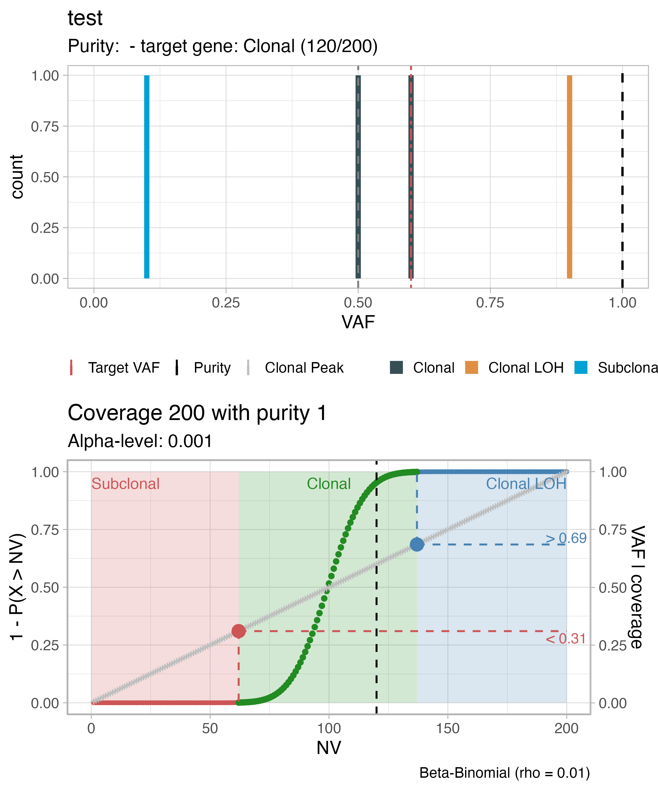

TAPACLOTH can be used to classify mutations from
targeted panel seqeuncing data. First, make sure that input data is in
the requested form. It should be a tibble with
sample(sample name), gene(name of the target
gene), nv (number of reads with variant), dp
(coverage), vaf (variant allele frequency) and
purity (sample purity) columns. For example:
data = dplyr::tibble(sample = "test",
gene = c("test gene 1", "test gene 2", "test gene 3", "target gene"),
nv = c(10, 50, 90, 120),
dp = c(100, 100, 100, 200),
VAF = c(0.1, 0.5, 0.9, 0.6),
purity = 1
)Then, you can run the classification on a sample using:
classified_data = analyse_sample(
data = data,
sample_name = "test",
alpha_level = 1e-3,
model = "Beta-Binomial",
rho = 0.01
)## ## ── test ────────────────────────────────────────────────────────────────────────The object classified_data now contains a
fit object that is basically the same input table with the
additional column class
classified_data$fit## # A tibble: 4 × 7
## sample gene nv dp VAF purity class
## <chr> <chr> <dbl> <dbl> <dbl> <dbl> <chr>
## 1 test test gene 1 10 100 0.1 1 Subclonal
## 2 test test gene 2 50 100 0.5 1 Clonal
## 3 test test gene 3 90 100 0.9 1 Clonal LOH
## 4 test target gene 120 200 0.6 1 Clonalplus the input parameters of the used test.
Now you can plot the classification results for the gene you are interested in:
plot_tapacloth(fit = classified_data, target_gene = "target gene")## Warning: replacing previous import 'cli::num_ansi_colors' by
## 'crayon::num_ansi_colors' when loading 'BMix'## Warning: replacing previous import 'crayon::%+%' by 'ggplot2::%+%' when loading
## 'BMix'## ✔ Loading BMix, 'Binomial and Beta-Binomial univariate mixtures'. Support : <https://caravagnalab.github.io/BMix/>## Warning: replacing previous import 'cli::num_ansi_colors' by
## 'crayon::num_ansi_colors' when loading 'easypar'## ✔ Loading CNAqc, 'Copy Number Alteration quality check'. Support : <https://caravagn.github.io/CNAqc/>## Warning: Use of `fit$purity` is discouraged. Use `purity` instead.## Warning: Use of `fit$purity` is discouraged. Use `purity` instead.## Warning: Removed 6 rows containing missing values (geom_bar).